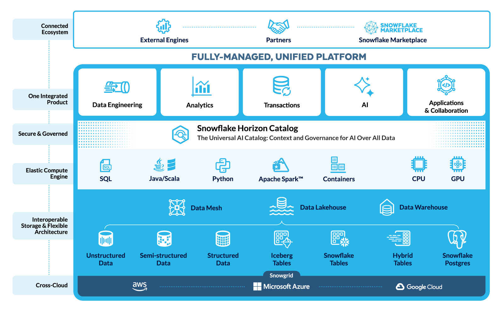
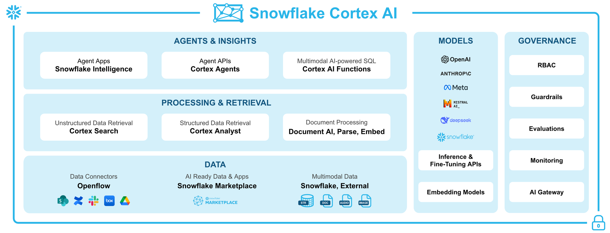
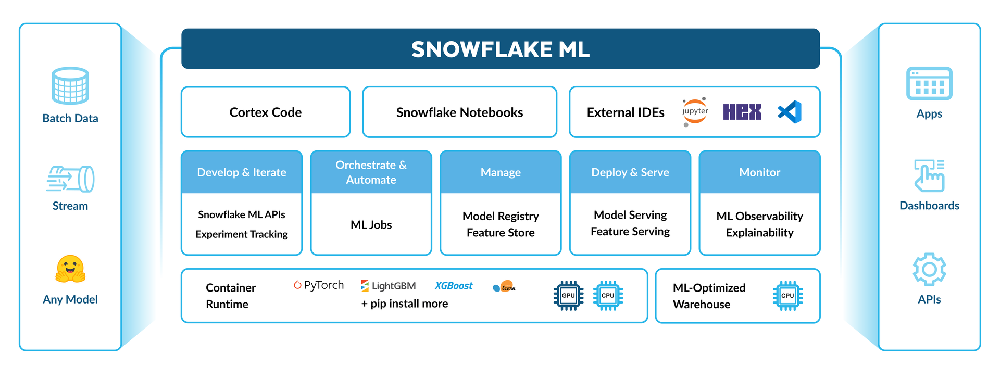
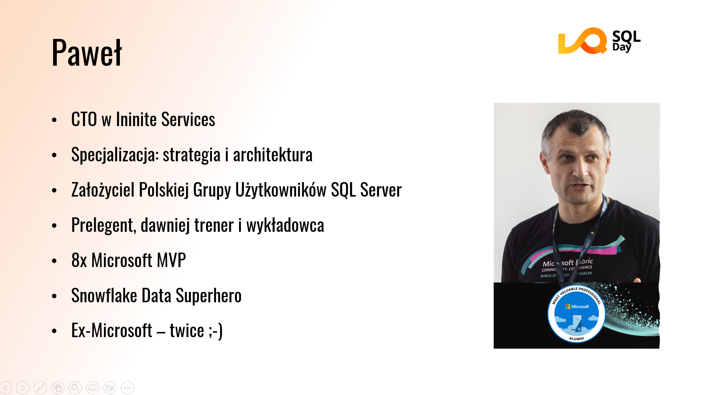

AI Functions • Multimodal • Agents • Snowflake Intelligence
Click any card below to view full screen. Press Escape or × to close.
Click a diagram to zoom in



Click a demo card for details
Resources to continue your Cortex AI journey

Built-in SQL functions that classify, summarize, translate, extract sentiment, and filter unstructured text — no model training, no infrastructure, just SQL.
Process audio, images, video, and documents directly in SQL. No external pipelines, no pre-processing — pass files from stages to AI functions and get structured results.
Build autonomous AI agents that reason, select tools, execute actions, and reflect on results. Expose the same capabilities to business users through a no-code conversational interface.
AI-powered coding assistant available both inside Snowsight (worksheets & notebooks) and as a standalone CLI for local development. Understands your schema, writes SQL, manages objects, and deploys code.